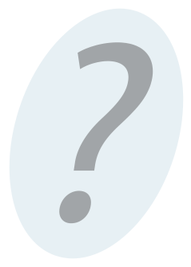
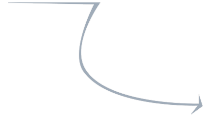

Про нас
Важлива інформація про навчання разом з нами

-
 Про що зараз мрієш ти?
Про що зараз мрієш ти?
-
 Навчання майбутнього вже сьогодні
Навчання майбутнього вже сьогодні
-
 Питання, які нам часто ставлять
Питання, які нам часто ставлять
Спробуємо вгадати:

|
власна квартира
чи навіть будинок? |

|
ГАРНИЙ
автомобіль |
|
закордонні
подорожі, можливо ДО ЕКЗОТИЧНИХ КРАЇН? |
|
Забезпечене
життя
для себе та близьких, коли не доводиться думати про гроші? |
| А, може, це свобода жити своїм життям? Самостійно керувати власним часом з можливістю працювати за зручним графіком без необхідності щодня їздити на роботу, але при цьому мати стабільно високий дохід? |
Як щодо 40 000 - 60 000 грн
/в місяць?
/в місяць?
|
з можливістю працювати за гнучким графіком та дистанційно? Ти
думаєш, що в нашій країні такі умови можливі лише для керівників та
власників бізнесу? У нас хороша новина: вже через рік-два-три так зможеш заробляти і ТИ . . . |
Як?
Професія майбутнього
| Сьогодні у тебе є реальна можливість поєднати гарний заробіток, гнучкий графік роботи та зручність дистанційної роботи. І це не фантомні схеми швидкого збагачення, які обіцяє численна банерна реклама. Віримо, що високого стабільного доходу можна досягти лише за допомогою власних зусиль. |
ГОЛОВНИМ ДВИГУНОМ РОЗВИТКУ СВІТОВОЇ ЕКОНОМІКИ Є ІНФОРМАЦІЙНІ ТЕХНОЛОГІЇ (IT).
- Вони дозволяють досягти проривних результатів у традиційних галузях: виробництві та послугах;
- Саме інформаційні технології повністю змінили і продовжують трансформувати індустрії звязку, розваг (книги, музика, фільми), банківських послуг;
- а також такі традиційні бізнеси, як послуги таксі (Uber);
- готелів (Airbnb);
- навчання (Coursera).
Герої інформаційної епохи - це
спеціалісти з інформаційних технологій. Вони знаходяться на передовій
змін, вони придумали та продовжують розвивати Windows, iOS, Android, а
також мільйони додатків до них, вони створюють соціальні мережі, сайти
та бази даних.
Гарна новина для тебе: сьогодні таких спеціалістів не вистачає.
Інформаційні технології розвиваються дуже
швидко і стають потрібними усюди, існуючі навчальні заклади просто не
встигають готувати потрібну кількість.
Нестача спеціалістів означає, що зарплати
на ринку стабільно зростають, і сягнули небачених для України значень: в
середньому спеціалісти з інформаційних технологій сьогодні отримують
3-5 тис доларів у місяць, і при цьому роботодавці активно полюють на
професіоналів.
Секрет таких високих зарплат не лише у
дефіциті кадрів, а й у тому, що для ІТ-галузі кордони - не проблема. Ти
можеш працювати вдома зі своєї квартири в Україні над замовленням
клієнта зі США чи Німеччини і отримувати винагороду у доларах чи євро з
рівнем оплати відповідно до світових стандартів.
Запрошуємо тебе приєднатися до світової
інформаційної еліти та за короткий час стати професіоналом у сфері
інформаційних технологій, щоб отримувати стабільно високий дохід,
працюючи в зручних умовах за гнучким графіком.
Що очікується від тебе
Програмування - це не так складно, як ти можеш уявляти. Безумовно, щоб стати хорошим програмістом, потрібен час та зусилля. Ризикнемо сказати, що крім часу та зусиль (та, зрозуміло, наявності простенького компютера) не потрібно більше ні-чо-го.
Не потрібно бути сильним у математиці: навіть якщо у школі ти не любив математику, а твої оцінки не піднимались вище середнього рівня, ти зможеш стати чудовим програмістом.
Не потрібно знати, як влаштований компютер чи бути досвіченим користувачем будь-яких програм. Достатньо часу на навчання та бажання займатися.
Гарні знання з математики, логіки, комп’ютера можуть пришвидшити темп навчання, але й без них кожен зможе досягти високого рівня професіоналізму у програмуванні завдяки іноваційному підходу до навчання Київської ІТ-Академії.
Розпочинай навчатися вже зараз!